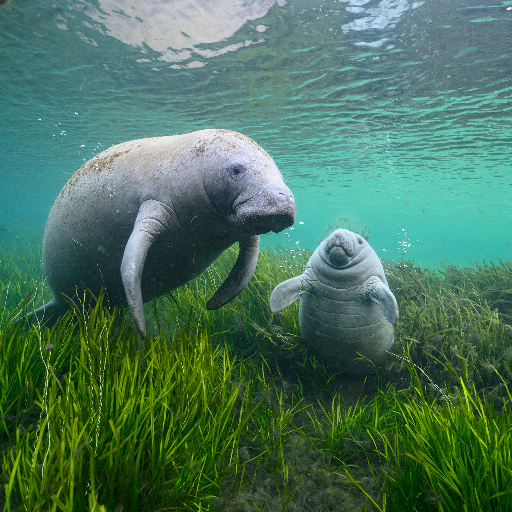

Manatees
Home Facts Anatomy Behaviour Habitat Diet Reproduction Popular Culture Other Facts Gallery About us Contact usManatees!
Welcome traveller! Let's discover our wonderful world of Manatees, look around and fall in love with these majestic animals.
Manatees are large, fully aquatic, mostly herbivorous marine mammals sometimes known as sea cows. There are three accepted living species of Trichechidae, representing three of the four living species in the order Sirenia: the Amazonian manatee, the West Indian manatee, and the West African manatee.